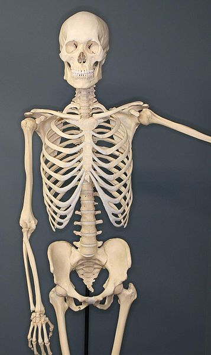

The human skeleton is the internal framework of the human body. It is composed of around 270 bones at birth - this total decreases to around 206 bones by adulthood after some bones get fused together. The bone mass in the skeleton reaches maximum density around age 21. The human skeleton can be divided into the axial skeleton and the appendicular skeleton. The axial skeleton is formed by the vertebral column, the rib cage, the skull and other associated bones. The appendicular skeleton, which is attached to the axial skeleton, is formed by the shoulder girdle, the pelvic girdle and the bones of the upper and lower limbs. The human skeleton provides six major functions; support, movement, protection, production of blood cells, storage of minerals, and endocrine regulation.
The human skeleton is not as sexually dimorphic as that of other primate species, but subtle differences between sexes in the morphology of the skull, dentition, long bones, and pelvis exist. In general, female skeletal elements tend to be smaller and less robust than corresponding male elements within a given population. The human female pelvis is also different from that of males in order to facilitate childbirth. Unlike most primates, human males do not have penile bones.
The axial skeleton (80 bones) is formed by the vertebral column (32-34 bones; the number of the vertebrae differs from human to human as the lower 2 parts, sacral and coccygeal bone may vary in length), a part of the rib cage (12 pairs of ribs and the sternum), and the skull (22 bones and 7 associated bones). The upright posture of humans is maintained by the axial skeleton, which transmits the weight from the head, the trunk, and the upper extremities down to the lower extremities as the hip joints. The bones of the spine are supported by many ligaments. The erector spinae muscles are also supporting and are useful for balance.
Hi! This was my first side-project in writing with a CSS Framework!